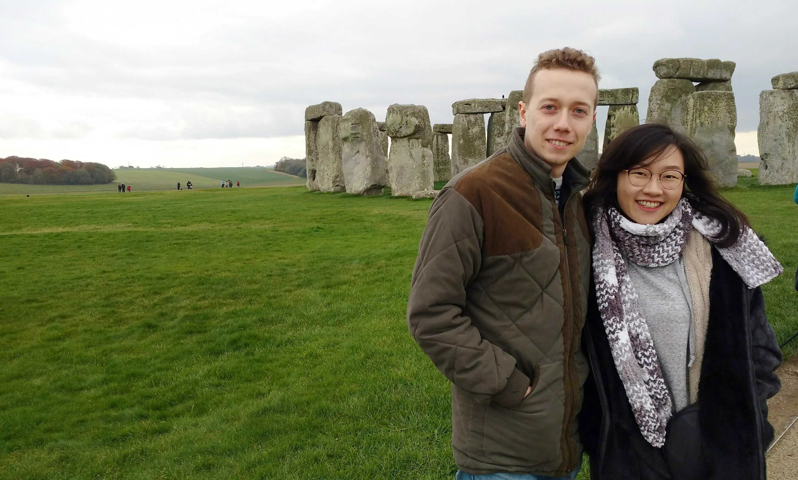
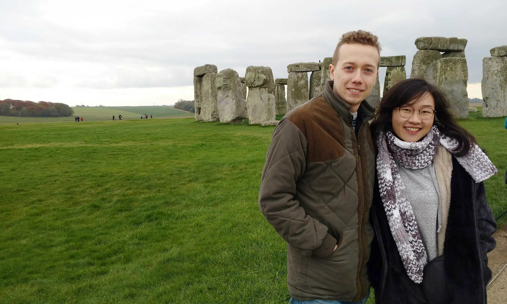

Sunday 20th November 2022 • 9:00AM until afternoon
วันอาทิตย์ที่ 20 พฤศจิกายน 2565 • 9.00 นาฬิกา
312/8 ค, ซอยคูกำพล Makham Yong, Chon Buri District, Chon Buri 20000
Next to Bean Sensory Coffee Roaster
บ้านเลขที่ 312/8ค ซ.คูกำพล อ.เมือง จ.ชลบุรี
ติดกับร้านกาแฟ Bean Sensory Coffee Roaster
Limited on-road parking available
จอดรถบนถนนในซอยได้ (จำนวนจำกัด)
Chinese style optional, in any colour
แบบจีนหากสะดวก สีตามอิสระ
 
